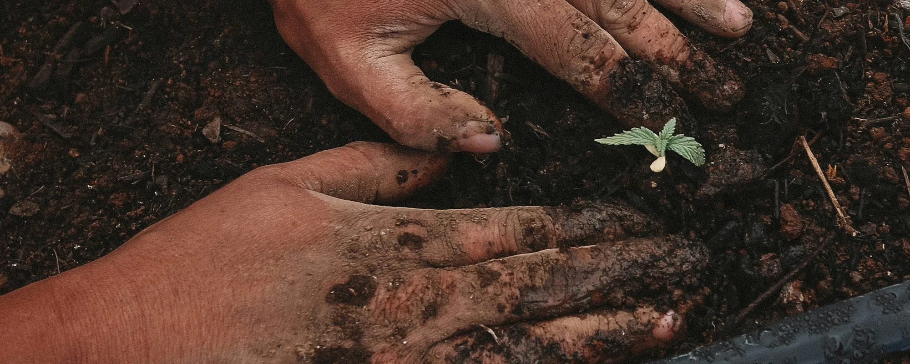

Metodologia
Come è stato costruito questo Project Work
Obiettivi del progetto
Questo sito è stato realizzato come Project Work nell'ambito della Tecnologia Web per la Sostenibilità d'Impresa. L'obiettivo è analizzare e comunicare le performance di sostenibilità di CAP Nord Ovest – parte del sistema Consorzi Agrari d'Italia – attraverso una piattaforma web accessibile e strutturata.
Il lavoro combina competenze di sviluppo web (HTML, CSS) con una lettura critica dei documenti di rendicontazione non finanziaria, traducendo i dati del Bilancio di Sostenibilità in contenuti fruibili da diversi pubblici, inclusa la visualizzazione ottimizzata per dispositivi mobili.
8
Sezioni tematiche del sito
GRI
Standard internazionale di riferimento
100%
Dati da fonte documentale ufficiale
HTML/CSS
Solo tecnologie web di base, nessun framework
Fasi di lavoro
Analisi documentale
Lettura integrale e analisi del Bilancio di Sostenibilità 2024 di CAP Nord Ovest (dati esercizio 2023). Identificazione degli indicatori ESG rilevanti secondo il framework GRI, delle iniziative sostenibili in atto e della struttura di governance aziendale. Estrazione e verifica dei dati quantitativi (KPI) direttamente dal documento originale.
Strutturazione dei contenuti
Organizzazione delle informazioni in otto sezioni tematiche (Home, Chi siamo, Sostenibilità, Agricoltura 4.0, KPI ESG, Report, Metodologia, Contatti) per rendere la navigazione intuitiva e adatta a diversi tipi di utenti. Definizione della gerarchia visiva e della palette cromatica coerente con il settore agroalimentare.
Sviluppo web
Realizzazione del sito in HTML5 e CSS3, con attenzione alla responsività mobile-first, all'accessibilità (ARIA label, contrasto cromatico) e alla coerenza visiva. Nessun framework JavaScript o dipendenza esterna: il sito è volutamente leggero, autonomo e compatibile con qualsiasi browser moderno. Inserimento di grafici SVG/CSS per la visualizzazione immediata dei KPI.
Elaborazione stime e proiezioni
Per gli indicatori con dati comparabili si usa il tasso di variazione percentuale (o tasso di crescita annuo): (valore finale − valore iniziale) / valore iniziale × 100. Esprime il cambiamento in rapporto alla base di partenza e permette di confrontare grandezze diverse. Ad esempio, la spesa in formazione passa da 40.417 € a 42.961 €: (42.961 − 40.417) / 40.417 × 100 = +6,29%.
Per ottenere gli scenari 2024–2025 si applica ai valori 2022–2023 il tasso annuo composto, usando la progressione geometrica: valore stimato(t) = valore 2023 × (valore 2023 / valore 2022)t−2023. Il fattore tra parentesi rappresenta il moltiplicatore annuale: per la formazione è 42.961 / 40.417 ≈ 1,06294; quindi 42.961 × 1,06294 ≈ 45.665 € nel 2024 e 45.665 × 1,06294 ≈ 48.539 € nel 2025. Si usa la crescita composta perché l'ipotesi è di mantenere costante la variazione relativa annua, non lo stesso aumento in euro ogni anno.
È un'estrapolazione meccanica, non una regressione né una previsione: due osservazioni descrivono un solo intervallo e non bastano a dimostrare un andamento persistente. Le quantità che passano da positive a negative non si proiettano con questo metodo. Se è disponibile un solo anno, un eventuale intervallo è invece un'analisi di scenario/sensibilità: mostra i risultati di ipotesi esplicite (per esempio riduzione del 5% o del 10%), non un intervallo statistico, una probabilità o un obiettivo. Per le quote si usa il rapporto parte/totale × 100; i conteggi di persone restano interi.
Per il valore economico generato è presentato uno scenario di crescita illustrativo con ipotesi esplicita di +1% annuo composto: 264.843.630 € × 1,01 = circa 267.492.066 € nel 2024; applicando di nuovo 1,01 si ottengono circa 270.166.987 € nel 2025. Non è una percentuale stimata dal report. Il valore generato (GRI 201-1) è alimentato principalmente dai ricavi di prodotti e servizi; leve coerenti con il report possono essere lo sviluppo dei servizi di precision farming, la promozione di soluzioni come irrigazione localizzata, fertirrigazione e biostimolanti, e un'offerta più mirata ai bisogni dei soci agricoltori. Più vendite o servizi possono aumentare il valore generato; l'efficienza dei costi, invece, incide soprattutto sul valore trattenuto se i ricavi non cambiano. Le voci d'investimento confrontabili scendono da 908.417 € a 395.961 € nel 2022–2023 (−56,4%), ma questa coincidenza non prova che ridurre gli investimenti aumenti i ricavi: il calo è solo un elemento di contesto, non la causa o la formula della proiezione.
Verifica e revisione
Controllo dell'accuratezza dei dati rispetto alla fonte documentale originale, verifica incrociata dei KPI riportati, test di navigazione su desktop e smartphone, revisione dei testi per chiarezza e accessibilità linguistica.
Fonti utilizzate
📄 Bilancio di Sostenibilità CAP Nord Ovest 2024
Documento principale di riferimento. Contiene le informazioni su governance, ambiente, persone, prodotti, servizi e filiera relative all'esercizio 2023. Prima rendicontazione non finanziaria dell'azienda. Disponibile nella sezione Report.
🌐 Sito ufficiale Consorzi Agrari d'Italia
Informazioni generali sul sistema CAI, la struttura cooperativa e le attività dei consorzi aderenti sul territorio nazionale. Utilizzato per contestualizzare il ruolo di CAP Nord Ovest all'interno del gruppo cooperativo italiano.
📋 Standard GRI – Global Reporting Initiative
Riferimento metodologico per l'interpretazione e la classificazione degli indicatori ESG. Il Bilancio di Sostenibilità di CAP Nord Ovest fa esplicito riferimento agli standard GRI (GRI 201, GRI 2-7, GRI 401, GRI 403, GRI 404, GRI 306, GRI 2-9, GRI 2-10, ecc.).
📰 Direttiva CSRD – Corporate Sustainability Reporting Directive
Normativa europea che estende e rafforza l'obbligo di rendicontazione non finanziaria. E riportata come contesto generale; il documento consultato non attesta una pubblicazione anticipata volontariamente da CAP Nord Ovest.
Indicatori GRI utilizzati
La tabella riporta i principali standard GRI citati nel Bilancio di Sostenibilità 2024 e le aree coperte in questo sito.
| Codice GRI | Titolo | Sezione del sito |
|---|---|---|
| GRI 201-1 | Valore economico direttamente generato e distribuito | KPI ESG – Performance economica |
| GRI 2-7 | Dipendenti – composizione | KPI ESG – Dimensione sociale |
| GRI 401 | Occupazione (assunzioni, turnover) | KPI ESG – Dimensione sociale |
| GRI 403 | Salute e sicurezza sul lavoro | KPI ESG – Dimensione sociale |
| GRI 404 | Formazione e istruzione | KPI ESG – Dimensione sociale |
| GRI 306 | Rifiuti | KPI ESG – Dimensione ambientale |
| GRI 302 | Energia | KPI ESG – Dimensione ambientale |
| GRI 2-9 | Struttura di governance | KPI ESG – Governance |
| GRI 2-10 | Nomina e selezione dell'organo di governo | KPI ESG – Governance |
| GRI 205 | Anticorruzione | KPI ESG – Governance |
| GRI 418 | Privacy dei clienti | KPI ESG – Governance |